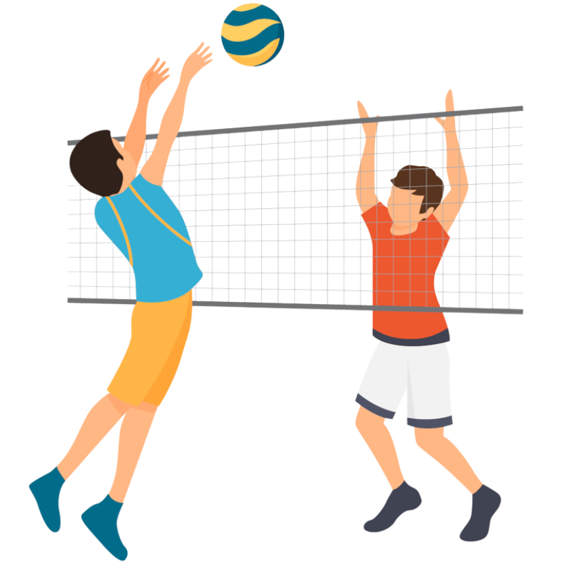
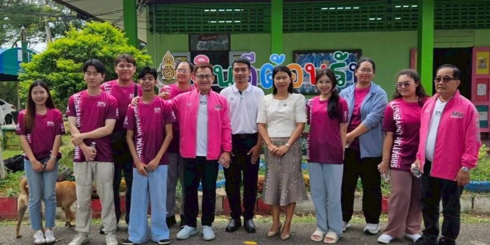
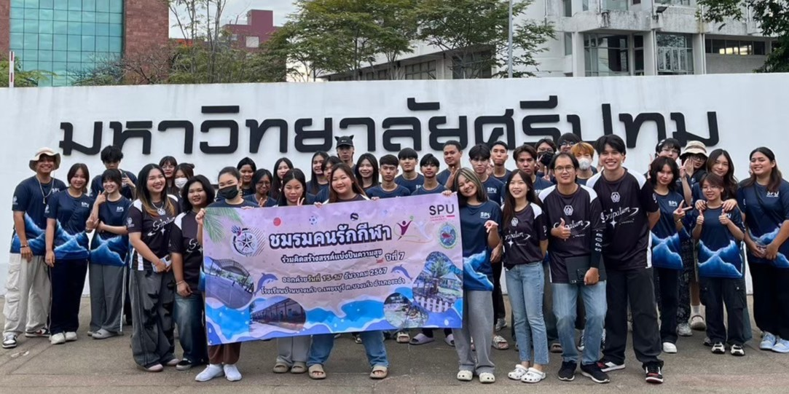
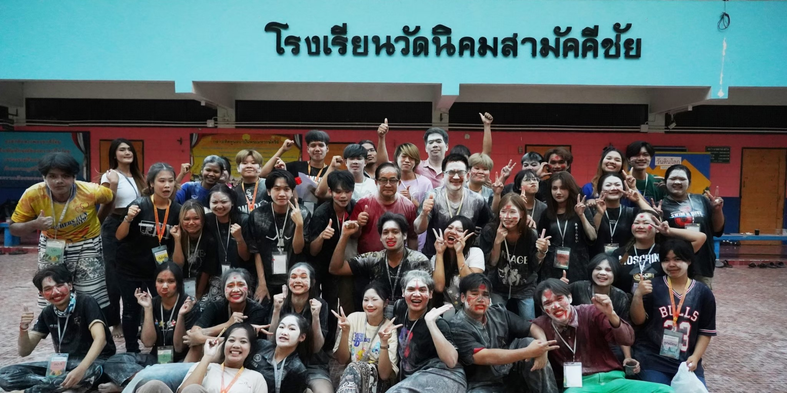

ข่าวสาร / กิจกรรม

กิจกรรมที่ผ่านมา

กรรมการชมรมคนรักกีฬา จัดประชุมวางแผนใหญ่ เตรียมเปิดรับสมาชิกในงาน “เปิดโลกกิจกรรม 68”
เมื่อวันที่ 9 ต.ค. 2568 คณะกรรมการชมรมคนรักกีฬา นำโดย อ.ณัฐนนท์ และ อ.อนันต์ ร่วมประชุมเตรียมความพร้อมจัดค่าย “ชมรมคนรักกีฬา ร่วมคิดสร้างสรรค์แบ่งปันความสุข ปีที่ 8” 🎯 เพื่อต้อนรับสมาชิกใหม่ในงาน “เปิดโลกกิจกรรม” วันที่ 30–31 ต.ค. 2568 💪🏀
...อ่านต่อ (คลิกที่นี่)...
ตัวแทนคณะกรรมการชมรมคนรักกีฬา ม.ศรีปทุม ลงพื้นที่สองจังหวัด ลุยสำรวจสถานที่จัดค่าย 68
📌 เมื่อวันที่ 15 ส.ค. 2568
ทีมอาจารย์ที่ปรึกษาและกรรมการชมรมฯ ได้ลงพื้นที่สำรวจโรงเรียนบ้านกล้วย (ราชบุรี)
และโรงเรียนบ้านห้วยน้ำโจน (กาญจนบุรี) 🚐✨
เพื่อคัดเลือกสถานที่จัดค่ายชมรมคนรักกีฬา ประจำปี 2568 🌟
✨ มารอลุ้นไปพร้อมกันว่าค่ายปีนี้จะจัดที่ไหนนะครับ ✨
ภาพกิจกรรม

ภาพกิจกรรม ปีที่ 8/2568
กิจกรรม “ร่วมคิด สร้างสรรค์ แบ่งปันความสุข” ครั้งที่ 8 ณ โรงเรียนบ้านกล้วย ต.ป่าหวาย อ.สวนผึ้ง จ.ราชบุรี ระหว่างวันที่ 13–16 ธันวาคม 2566
ดูทั้งหมด
ภาพกิจกรรม ปีที่ 7/2567
สานต่อพลังจิตอาสา มอบความสุขให้น้อง ๆ โรงเรียนบ้านบางเก่า ต.บางเก่า อ.ชะอำ จ.เพชรบุรี วันที่ 14–16 ธันวาคม 2567
ดูทั้งหมด
ภาพกิจกรรม ปีที่ 6/2566
ชมรมคนรักกีฬา SPU ร่วมกับ 3 ชมรมพันธมิตร จัดกิจกรรมจิตอาสา ณ โรงเรียนวัดนิคมสามัคคีชัย จ.ลพบุรี ระหว่างวันที่ 14–17 ธันวาคม 2568
ดูทั้งหมด